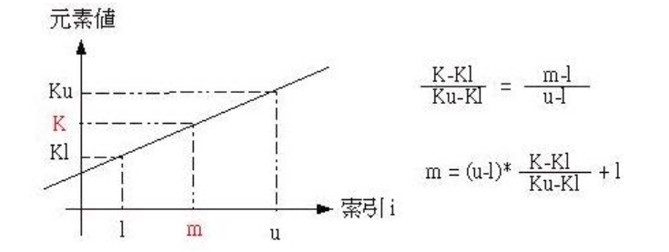

是二分法的提高
方法
插补法查找是以数据分布的近似直线来作比例运算，以求出中间的索引并进行数据比对，如果取出的值小于要寻找的值，则提高下界，如果取出的值大于要寻找的值，则降低下界，如此不断的减少搜寻的范围，所以其本原则与二分法查找是相同的，至于中间值的寻找是透过比例运算，如下所示，其中K是指定要寻找的对象，而m则是可能的索引值

用插补法的思想来找mid，而不是只是除以2
KEY_NOT_FOUND = -1
def interpolation_search(sortedarr,key):
low = 0
high = len(sortedarr)-1
while not high < low:
mid = low+(key - sortedarr[low])*(high-low)//(sortedarr[high]-sortedarr[low])
if sortedarr[mid]<key:
low = mid + 1
elif sortedarr[mid]>key:
high = mid - 1
else:
return mid
return KEY_NOT_FOUND
if __name__ == '__main__':
arr = [0, 2, 3, 5, 12, 23, 43, 45, 100, 342]
key = int(input("please input your number: "))
result = interpolation_search(arr,key)
if result != -1:
print("the key: %d is in the arr[%d] = %d" % (key,result,arr[result]))
else:
print("not found")
'''
please input your number: 5
the key: 5 is in the arr[3] = 5
'''